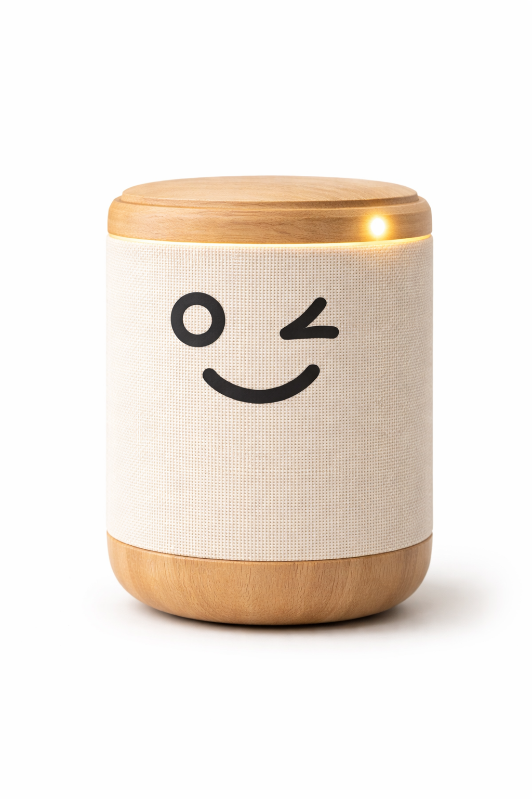

Conversayayo
Conversayayo es un asistente de voz diseñado especialmente para personas mayores, cuyo objetivo principal es ofrecer compañía, apoyo y ayuda en el día a día.
Su propósito es reducir la sensación de soledad y facilitar que las personas mayores puedan mantenerse activas y
conectadas sin necesidad de conocimientos tecnológicos.
El dispositivo permi te recordar tareas importantes como la toma de medicamentos,
citas médicas o actividades diarias mediante alarmas y recordatorios personalizados.
Además, ofrece funciones de conversación y entretenimiento, como charlar con el usuario,
contar historias o proponer pequeños juegos de memoria,
lo que contribuye a estimular la mente y mejorar el bienestar emocional.
